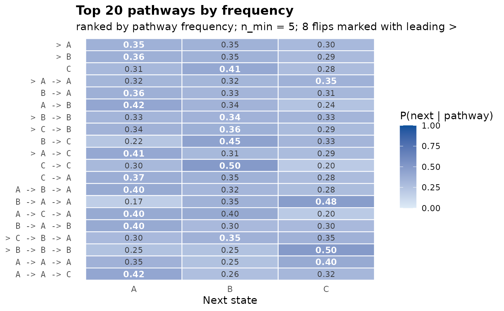
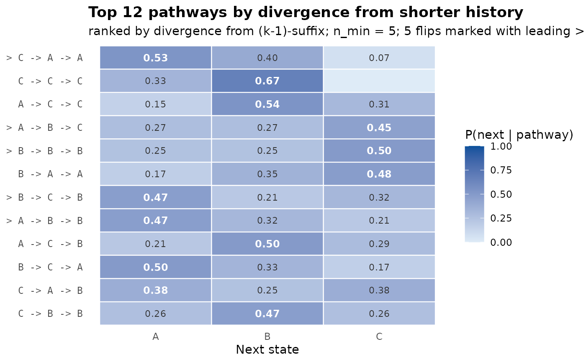

Heatmap visualisation of the pathway table: rows are pathways
(sorted), columns are next-state probabilities under the fitted
tree. The modal next state of each row is annotated in bold; rows
whose modal next state flips relative to their parent
pathway are flagged in the row labels (with a leading caret
>). A side strip on the left encodes the pathway count on a
log scale.
This is the natural pathway-focused visualisation: one glance shows which pathways are common, which are sharp (high mass on a single next state), which are diffuse (mass spread evenly), and which carry trajectory-specific structure that order-1 misses.
Usage
plot_pathways(
tree,
top = 20L,
sort_by = c("count", "divergence", "depth"),
min_count = 5L,
show_flips = TRUE,
title = NULL,
...
)Arguments
- tree
A
transitiontrees.- top
Integer. Maximum number of pathways to show. Default 20.
- sort_by
Character. One of
"count"(default),"divergence", or"depth".- min_count
Integer. Drop pathways with fewer than this many occurrences. Default 5.
- show_flips
Logical. Mark modal-flip pathways with a leading caret in the label. Default
TRUE.- title
Character. Plot title; if
NULL(default) a title is derived fromsort_by.- ...
Ignored.
Examples
# \donttest{
seqs <- replicate(50, sample(c("A","B","C"), 12, replace = TRUE),
simplify = FALSE)
tree <- context_tree(seqs, max_depth = 3)
plot_pathways(tree)

plot_pathways(tree, sort_by = "divergence", top = 12)

# }